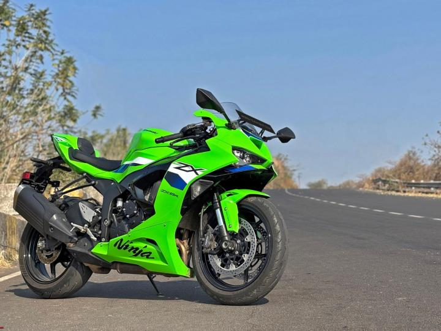
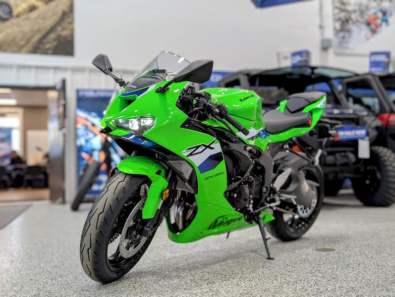
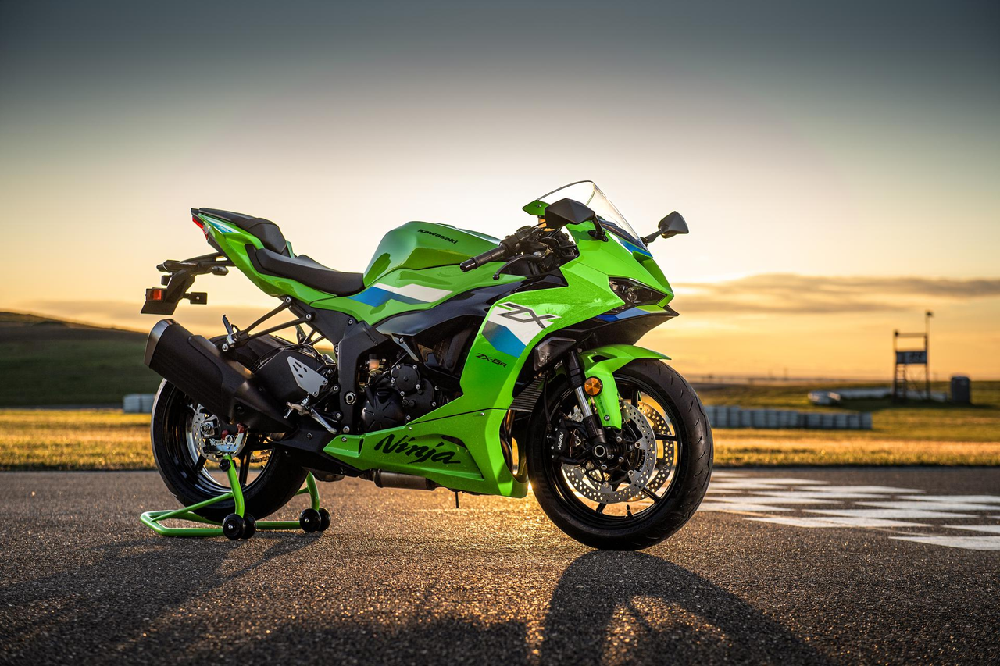

Galeria Ninja ZX-6R


A Kawasaki Ninja ZX-6R 636 combina potência, precisão e tecnologia, sendo uma das supersport mais equilibradas da categoria 600cc.

636cc
130 CV
262 km/h
R$ 72 mil
A Ninja ZX-6R 636 é conhecida por seu motor ampliado em relação às 600cc tradicionais, oferecendo mais torque em baixa e média rotação, ideal para uso urbano e pista.
• Controle de tração KTRC
• Embreagem assistida e deslizante
• Modos de pilotagem
• Painel digital moderno
• Design aerodinâmico agressivo

